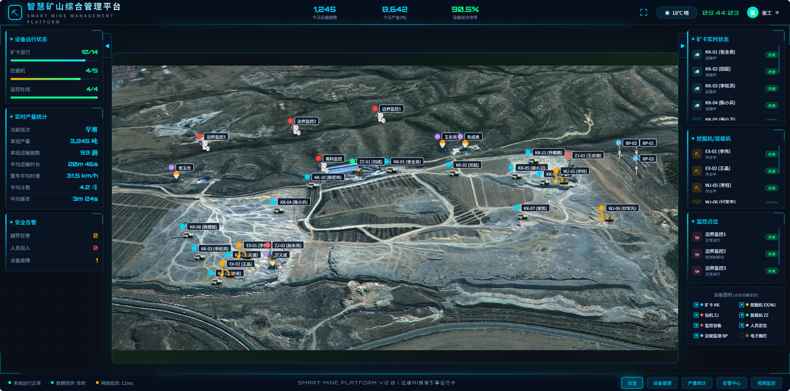
3D 电子沙盘
一屏观全局，一图管全域。通过三维数字孪生技术，完整复刻矿山地形地貌、生产设施与人员分布，让矿区每一寸土地、每一台设备、每一位人员的实时状态都清晰可见，实现矿山全要素的数字化、可视化管理。
行业痛点
露天矿山的日常，长期依赖人工估算与经验调度——产量靠记、调度靠喊、安全靠盯。数据说不清，管理就没有抓手。智慧矿山管理系统要解决的，正是这五个具体问题。
生产数据靠人工估算，产量统计滞后、误差大，结算纠纷频发。
设备调度凭经验，装车等待时间长，产能释放不充分。
设备健康状态不透明，故障停机被动应对，维修成本高。
安全风险靠人盯，疲劳驾驶、盲区闯入等事故隐患难以及时识别。
多品牌、多系统数据孤岛，管理决策缺乏统一数据支撑。
五大维度解决方案
打破信息孤岛，打造矿山「智慧大脑」。天远智慧矿山系统提供全域数据采集与三维可视化展示，实现「人、机、料、法、环」全生产要素的实时透明化管理。

一屏观全局，一图管全域。通过三维数字孪生技术，完整复刻矿山地形地貌、生产设施与人员分布，让矿区每一寸土地、每一台设备、每一位人员的实时状态都清晰可见，实现矿山全要素的数字化、可视化管理。
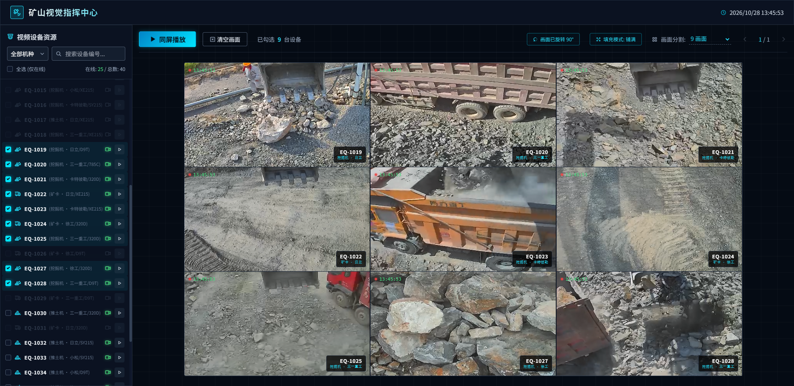
全域视频无死角覆盖，实时回传采掘作业、运输调度、生产工序的现场画面。支持重点区域高清监控、异常情况智能预警，让您随时随地掌握生产一线动态，实现对关键环节的精准把控与高效指挥。
从年计划到日排产，天远系统提供精准的生产模型，确保每一个生产环节紧密咬合，告别传统人工记车，实现产量数据自动、精准统计。
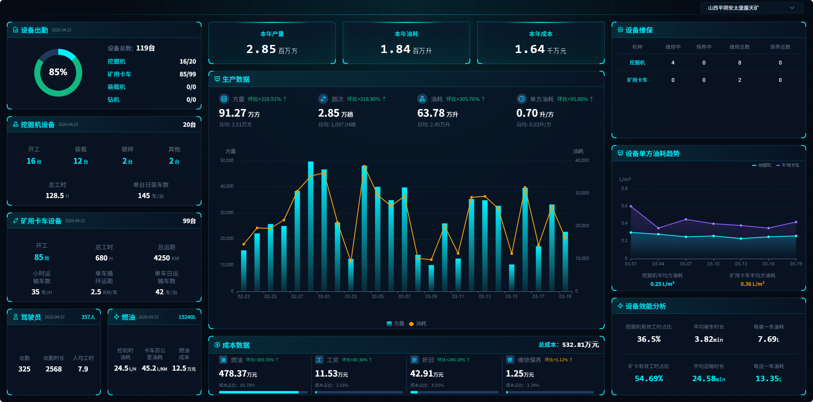
自动拆解生产计划、精准下发工作任务、自动汇总生产数据、智能分析产能瓶颈、及时预警任务延误，实现生产全流程的透明化、精细化管控，为生产调度与决策提供可靠的数据支撑。
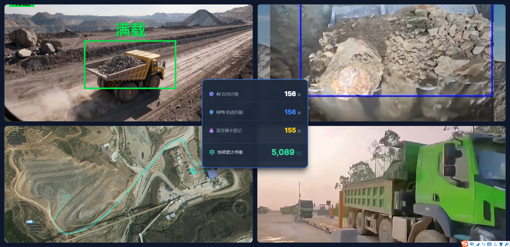
AI 识别、GPS 定位、蓝牙刷卡、地磅等多种采集方法。
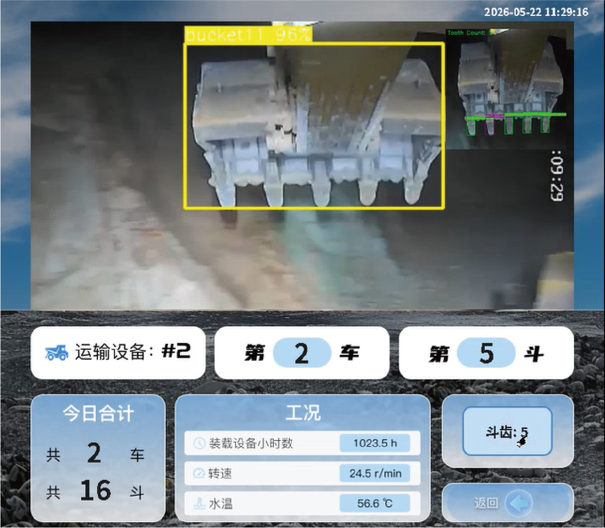
每一趟运输都生成完整的作业记录，系统与车机随时可查。
拒绝粗放管理，天远系统深入每一个作业循环。通过智能算法优化运输路径与设备协同，大幅缩短设备空载与排队时间，实现极致的降本增效。
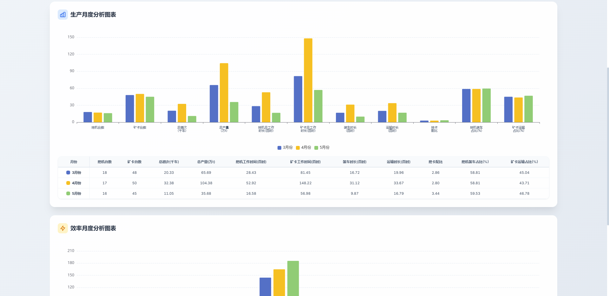
挖机、矿卡产量与油耗、装车效率逐月对比，降本增效有据可依。
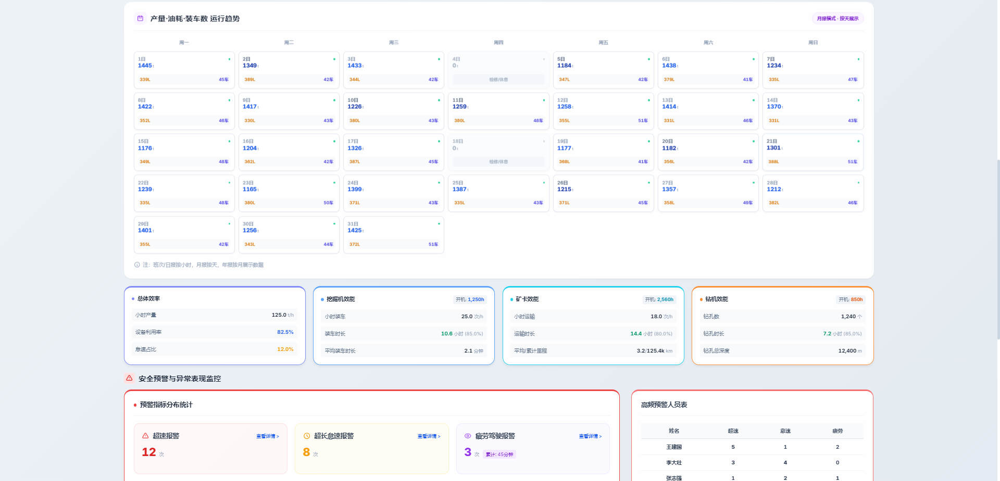
产量、油耗与装车数在运行过程中同步呈现，波动与异常一眼可见。
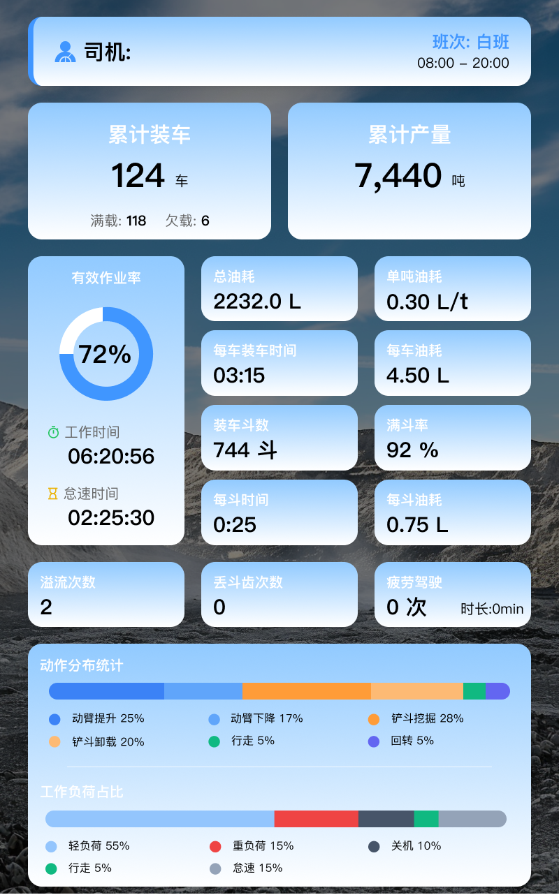
装车数据在车机端实时确认与回传，任务与产量同步闭环。
设备是矿山的核心资产。我们通过物联网（IoT）技术，为每一台重型设备进行「实时体检」，将「事后维修」升级为「事前预防」。
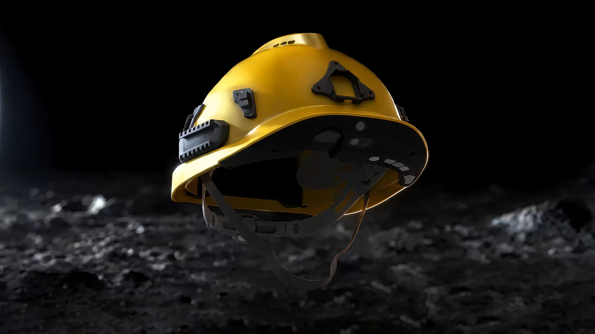
智能头盔像一位随时待命的专家助手，初学者也能在 AR 指导下精准完成复杂任务，大幅降低技术门槛，用人成本直接降低。
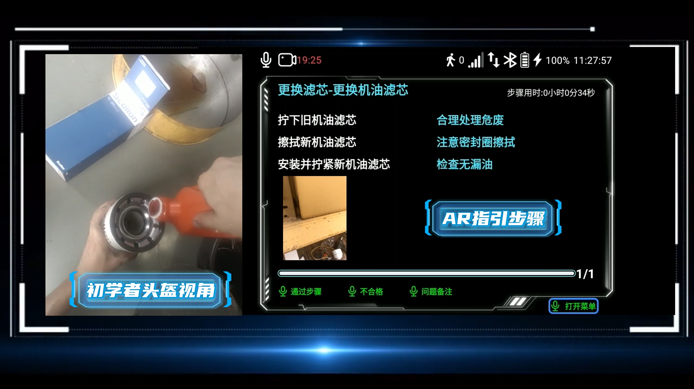
提前识别潜在故障，预测关键部件的风险和寿命，减少非计划停机带来的损失。
安全是矿山企业不可逾越的红线。天远智慧矿山构建全方位、全天候的主动安全防护网，把隐患消灭在萌芽状态。
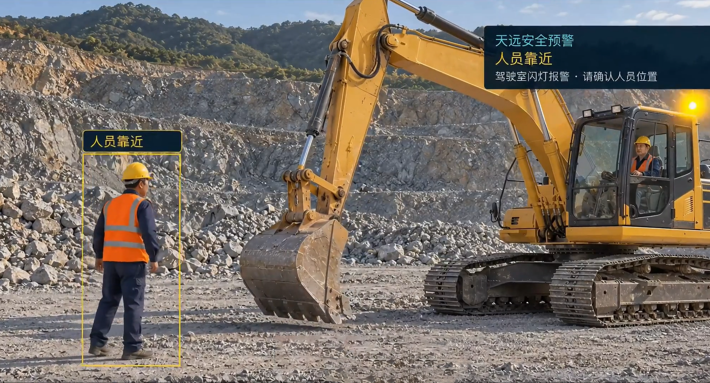
主动安全监测，让每一位矿车司机、每一趟运输任务、每一次行车过程，都在您的安全守护之中。
让每一次人员侵入、每一处危险盲区，都在您的及时预警之中。
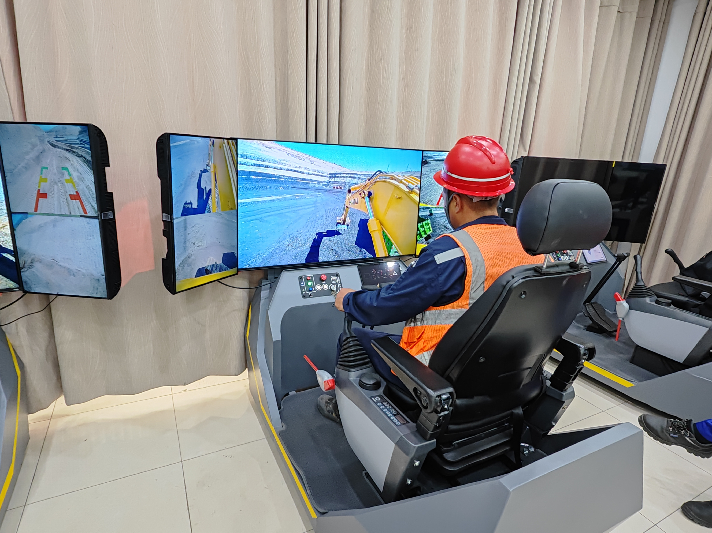
依托 5G 通信实现人机分离，让操作人员彻底脱离塌方、粉尘等高危施工作业面。
优势与核心效果
硬件成本低，无需搭建基站，通过 4G、5G、近距离通讯即可完成数据传输。
工作小时、油耗等数据自动采集。实时工况与历史工况统计数据，可根据这些数据判断、监控设备状况。
多品牌统一管理。满足客户多机种、多品牌、多数据的需求，将设备管理集中化，解决客户监管困难的问题，节省人力成本。
CORE RESULTS
智能化改造后，矿山的效率、成本、安全三个维度实现可视化的显著跃升。
0%
产量统计效率提升
0%
结算纠纷减少
0%+
设备利用率分析精准度
0%
装车等待时间缩短
分钟级
故障响应时间（原小时级）
0%
维修成本降低
0%
事故率降低
周→日
算薪周期缩短
彻底杜绝
代打卡现象
适用对象与典型案例
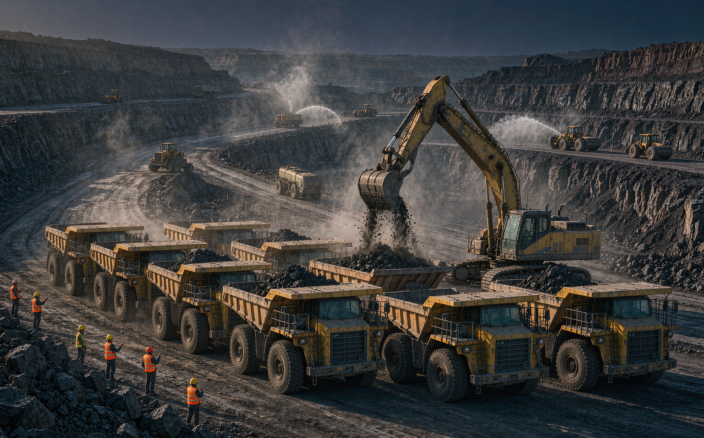
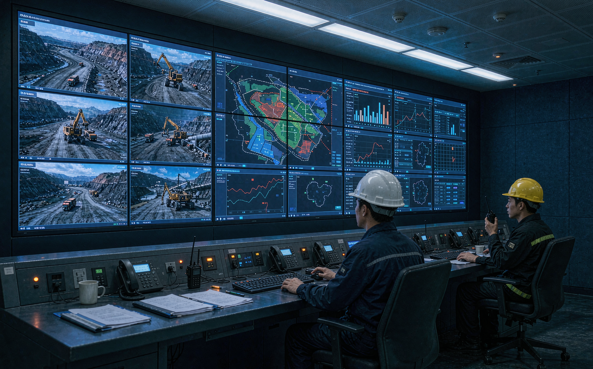
方案支撑
RK3576/RK3588 边缘计算平台，集成 YOLO 目标检测、卡尔曼滤波追踪、TTS 语音交互
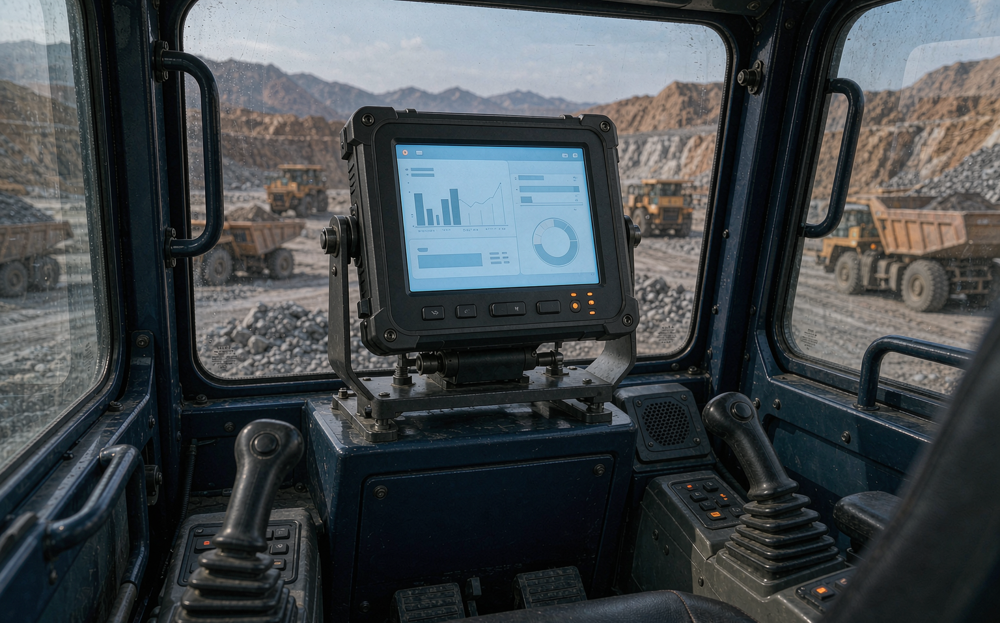
定位版／数据采集版／AI 基础版／AI Plus 版／AI Ultra 版五档可选，支持 CAN 总线采集、AI 模型推理、UWB/蓝牙配对

北斗/GPS 双模定位、视音频通话、AI 模型识别
3D 电子沙盘、数据大屏、设备监控、智能调度、运营报告、安全环保
IoTDB 时序数据库、Kafka 消息队列、MySQL 关系数据库、Redis 缓存
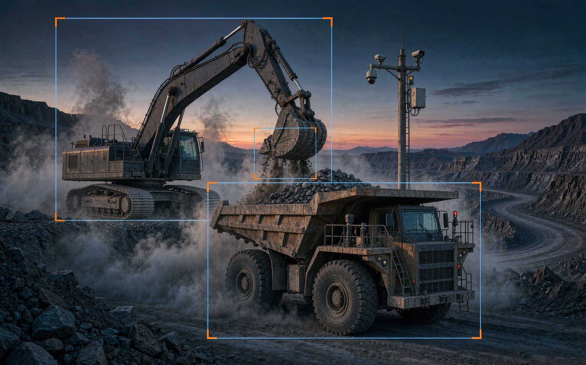
挖掘机装车计数、装运设备配对、斗齿丢失报警、卡车满载识别、斗容利用率、司机疲劳驾驶、司机人脸识别、作业盲区人员进入、未按规定着装
请填写公司名称与联系方式，我们会尽快与您取得联系。